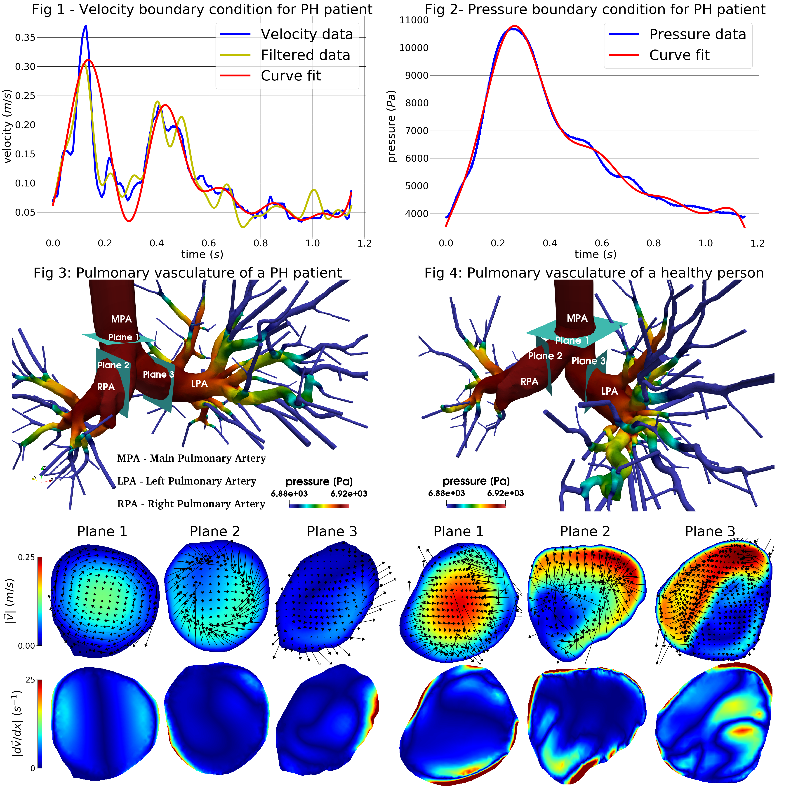

Entry 34¶
Attempting Prognosis of Pulmonary Hypertension (PH) via Computational Fluid Dynamics¶
Narasimha Rao Pillalamarri, Senol Piskin, Vitaly Kheyfets, Alifer Bordones, and Ender A. Finol
Pulmonary hypertension (PH) is a degenerative disease whose causes are still not defined clearly. It is a condition where the right ventricle (RV) exerts augmented pressure with the aim of maintaining blood circulation through the pulmonary vasculature. This phenomenon triggers the remodeling of pulmonary arteries, which thicken and, consequently, stiffen because the physiological response of endothelial cells that form the innermost lining of the arterial walls. Thickening of the RV wall is an added after-effect that the heart undergoes in order to manage the arterial remodeling. Furthermore, the lungs increase their resistance to blood flow, which feeds the high-pressure loop in the ventricle. Typically, PH is diagnosed only in the advanced stages and patients survive three to five years from the time of diagnosis.
The need for early warning non-invasive PH prognosis methods has long been felt. Computed tomography (CT) provides images of the pulmonary vasculature, but falls short when it comes to identifying the signs of PH with reasonable accuracy. In our plot submitted to the John Hunter excellence in plotting contest -2018, we illustrate the results obtained from employing computational fluid dynamics (CFD) to evaluate flow metrics that can potentially show signs of a developing PH condition. A reasonable portion of germane literature has reported on wall shear stress in the pulmonary arteries to be an unambiguous marker of PH. Based on these findings, our plot visualizes the velocity, pressure and shear distributions, and vorticity fields occurring in the blood stream at selected cross-sectional planes in the pulmonary vasculature. In addition, we compare the aforementioned metrics between a PH patient and a healthy subject.
The plot is divided into four figures. Figure 1 shows the velocity profile applied to the inlet of the main pulmonary artery. The invasive, patient-specific velocity measurements are filtered and fitted to a sinusoidal function using the Numpy and Scipy libraries, as well as Matplotlib. The final fitted function is used as an input to the simulation. Figure 2 illustrates the patient-specific pressure measurements and the corresponding curve for the fit function. This pressure is used to check the correct values of the resistances at the outlets of the pulmonary arteries. The simulation results are shown in Figures 3 and 4 for a PH patient and a healthy subject, respectively. 3D geometries are obtained by reconstructing the individual CT images and represent the pressure distributions throughout the whole pulmonary vasculature. Below each 3D geometry, the velocity and shear contours are given for three pre-selected cross-sectional planes as shown. The vorticity vectors are also embedded into the velocity contours. These 2D images show the difference in hemodynamics of a healthy subject and a severe PH patient. The latter has lower blood velocity due to higher distal pulmonary artery resistance, as expected from the clinical diagnosis. Furthermore, this patient has lower shear due to the lower velocity gradients. Our current and prior work on PH modeling suggest the possibility of using CFD simulations for disease characterization and risk classification.
Code and data: 1